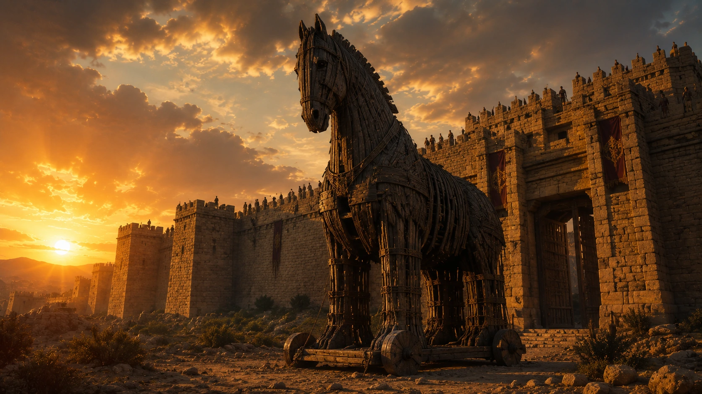

Tarih boyunca bazı hikâyeler vardır ki gerçek olup olmadığından bağımsız olarak insanlığın hafızasında yaşamaya devam eder. Truva Atı da bu hikâyelerin en ünlülerinden biridir. Dev bir tahta at, yıllarca süren kuşatma, kurnaz bir plan, surların içine alınan gizli askerler ve bir gecede düşen büyük bir şehir… Bu anlatı o kadar güçlüdür ki bugün "Truva atı" ifadesi yalnızca antik bir efsaneyi değil, içeriye dost gibi girip içeriden yıkım getiren her türlü tuzağı anlatmak için kullanılır.
Fakat asıl soru hâlâ yerinde durur: Truva Atı gerçekten var mıydı?
Bu soruya basitçe "evet" ya da "hayır" demek kolaydır, ama doğru değildir. Çünkü Truva Atı meselesi yalnızca tek bir nesnenin var olup olmadığıyla ilgili değildir. Burada iç içe geçmiş birkaç ayrı soru vardır. Truva Savaşı gerçekten yaşandı mı? Homeros'un anlattığı Troya ile arkeolojik Troya aynı yer mi? Şehir gerçekten bir savaş sonucunda mı yıkıldı? Ahşap at anlatısı tarihsel bir olaya mı dayanıyor, yoksa daha sonra gelişmiş şiirsel bir motif mi? İşte Truva Atı'nı ilginç yapan şey de tam olarak bu belirsizliktir.
Bugün arkeoloji bize Troya adlı bir kentin gerçekten var olduğunu gösteriyor. Çanakkale'deki Hisarlık Tepesi'nde yapılan kazılar, burada binlerce yıl boyunca üst üste kurulmuş yerleşimler bulunduğunu ortaya koymuştur. Bu yerleşimlerden bazıları yıkım izleri taşır. Özellikle Geç Tunç Çağı'na tarihlenen Troya tabakaları, Homeros'un anlattığı savaş dünyasıyla ilişkilendirilmiştir. Ancak bu durum, Homeros'un anlattığı her sahnenin birebir tarihsel gerçek olduğu anlamına gelmez.
Truva Atı tam da bu noktada karşımıza çıkar. Çünkü arkeolojik kazılar Troya'nın varlığını ve bazı dönemlerde yıkıma uğradığını gösterebilir; fakat dev bir ahşap atın gerçekten yapıldığını kanıtlayan doğrudan bir bulgu yoktur. Bu nedenle Truva Atı'nı değerlendirirken hem antik metinleri hem arkeolojik verileri hem de mitolojik anlatıların nasıl çalıştığını birlikte düşünmek gerekir.
Bu makalede Truva Atı'nın hangi kaynaklarda geçtiğini, Homeros'un bu hikâyeyi nasıl aktardığını, arkeolojinin Troya hakkında ne söylediğini ve Truva Atı'nın gerçekten bir savaş hilesi mi yoksa sembolik bir anlatı mı olabileceğini inceleyeceğiz. Çünkü bu hikâye yalnızca bir tahta atın içine saklanan askerlerden ibaret değildir. Truva Atı, tarih ile efsanenin birbirine en çok karıştığı yerlerden biridir.
Truva Atı Hikâyesi Nedir?
Truva Atı hikâyesi, Troya Savaşı'nın sonunu açıklayan en ünlü anlatıdır. Efsaneye göre Akhalar, yani Yunan ordusu, Troya'yı yıllarca kuşatır; ancak surları aşmayı başaramaz. Şehir güçlüdür, savunması sağlamdır ve savaş uzadıkça iki taraf da tükenmeye başlar. Bu noktada kaba kuvvetin işe yaramadığı yerde kurnazlık devreye girer.
Planın merkezinde Odysseus vardır. Yunan mitolojisinde zekâsı ve stratejik aklıyla tanınan Odysseus, Troya'yı doğrudan saldırıyla değil, içeriden çökertmeyi amaçlayan bir hile tasarlar. Akhalar büyük bir ahşap at yapar, içine seçilmiş askerleri gizler ve geri çekiliyormuş gibi görünerek gemilerini kıyıdan uzaklaştırır. Troya halkı, düşmanın gittiğini ve geride tanrılara adanmış büyük bir armağan bıraktığını düşünür.
Bu noktada hikâyenin trajik tarafı başlar. Troyalılar atı şehrin içine alıp almamak konusunda tereddüt eder. Bazıları bunun bir tuzak olabileceğini sezer. Özellikle rahip Laokoon'un uyarısı bu anlatının en meşhur sahnelerinden biridir. Laokoon, Yunanların armağanına güvenilmemesi gerektiğini söyler. Ancak efsaneye göre onun uyarısı dikkate alınmaz ve at, Troya surlarının içine alınır.
Gece olduğunda atın içindeki Akha askerleri dışarı çıkar. Şehrin kapılarını dışarıda bekleyen orduya açarlar. Böylece yıllardır alınamayan Troya, bir gecede düşer. Savaş yalnızca askerî güçle değil, aldatma ve stratejiyle kazanılmış olur. Truva Atı'nın bu kadar ünlü olmasının nedeni de buradadır. Hikâye, bazen en güçlü surların dışarıdan değil, içeriden yıkıldığını anlatır.
Ancak bu hikâyenin bugün bilinen biçimi, tek bir antik metinden gelmez. Truva Atı anlatısı farklı kaynaklarda farklı ayrıntılarla karşımıza çıkar. Homeros'un İlyada adlı eseri Troya Savaşı'nı anlatır, fakat savaşın sonunu ve at hilesini ayrıntılı biçimde işlemez. Truva Atı hakkında daha açık bilgiler Odysseia, Vergilius'un Aeneis adlı eseri ve daha sonraki antik anlatılarda görülür.
Homeros Truva Atı'ndan Bahseder mi?
Truva Atı denildiğinde birçok kişinin aklına doğrudan Homeros gelir. Bu oldukça anlaşılır bir durumdur; çünkü Troya Savaşı'nı dünya edebiyatının merkezine yerleştiren en büyük metinlerden biri Homeros'un İlyada adlı eseridir. Ancak burada şaşırtıcı bir ayrıntı vardır: İlyada, Truva Atı hikâyesini ayrıntılı biçimde anlatmaz.
İlyada Troya Savaşı'nın tamamını değil, savaşın son yılındaki kısa bir dönemi konu alır. Eserin odağında Akhilleus'un öfkesi, Hektor'un ölümü ve savaşın trajik boyutu vardır. Yani İlyada başladığında savaş zaten yıllardır sürmektedir; bittiğinde ise Troya henüz düşmemiştir. Bu nedenle Truva Atı, İlyada'nın ana olay örgüsünün dışında kalır.
Buna rağmen Homeros geleneğinde Truva Atı tamamen yok değildir. Odysseia'da bu hikâyeye göndermeler yapılır. Odysseus'un zekâsı, savaşın sonundaki hile ve Troya'nın düşüşü, sonraki anlatılarda çok daha belirgin hâle gelir. Bu durum, Truva Atı hikâyesinin Homeros döneminde bilindiğini, ancak İlyada'nın merkezinde yer almadığını düşündürür.
Truva Atı anlatısının en dramatik ve ayrıntılı biçimlerinden biri ise Romalı şair Vergilius'un Aeneis adlı eserinde karşımıza çıkar. Vergilius burada olayı Troyalı Aeneas'ın gözünden aktarır. Laokoon'un uyarısı, atın şehre alınması, gece yaşanan yıkım ve Troya'nın düşüşü bu metinde son derece etkileyici bir biçimde anlatılır. Bugün zihnimizde canlanan Truva Atı sahnesinin büyük bir kısmı, aslında Homeros'tan çok Vergilius'un edebi anlatımına borçludur.
Bu ayrım son derece önemlidir. Çünkü popüler kültürde çoğu zaman Truva Atı hikâyesi doğrudan Homeros'un anlattığı kesin bir sahne gibi düşünülür. Oysa antik edebiyat daha katmanlıdır. Homeros Troya Savaşı'nın ana dünyasını kurar, fakat Truva Atı'nın ayrıntılı dramatik anlatısı daha sonraki metinlerde belirginleşir.
Troya Gerçekten Var mıydı?
Truva Atı'nın gerçek olup olmadığını tartışmadan önce cevaplanması gereken daha temel bir soru vardır: Troya gerçekten var mıydı? Çünkü eğer Troya tamamen hayal ürünü bir şehir olsaydı, Truva Atı'nı tarihsel açıdan konuşmak zaten mümkün olmazdı. Fakat bugün elimizdeki arkeolojik veriler, Troya'nın yalnızca destanlarda yaşayan hayali bir şehir olmadığını açık biçimde göstermektedir.
Troya, günümüzde Çanakkale sınırları içinde yer alan Hisarlık Tepesi ile özdeşleştirilir. Burada yapılan kazılar, bölgede tek bir şehir değil, binlerce yıl boyunca üst üste kurulmuş birçok yerleşim bulunduğunu ortaya koymuştur. Konumu, Çanakkale Boğazı'na yakınlığı ve Ege ile Anadolu arasındaki geçiş yollarını kontrol edebilmesi nedeniyle tarih boyunca dikkat çekici bir öneme sahip olmuştur.
Troya kazıları denildiğinde akla ilk gelen isim Heinrich Schliemann'dır. 19. yüzyılda Hisarlık'ta yaptığı kazılar, Troya'nın arkeolojik olarak dünya gündemine girmesini sağladı. Ancak Schliemann'ın çalışmaları bugün büyük bir dikkatle değerlendirilir. Çünkü dönemin kazı yöntemleri modern arkeoloji standartlarından oldukça uzaktı ve yaptığı bazı müdahaleler yerleşimin üst tabakalarına ciddi zarar verdi. Yine de onun kazıları, Troya meselesinin yalnızca edebi bir tartışma olmaktan çıkıp arkeolojik bir araştırma alanına dönüşmesinde önemli rol oynadı.
Daha sonraki kazılar ve araştırmalar, Hisarlık'ta farklı dönemlere ait çok sayıda Troya tabakası bulunduğunu gösterdi. Bu tabakalar arasında özellikle Troya VI ve Troya VIIa, Homeros'un anlattığı savaş dünyasıyla ilişkilendirilen dönemler açısından büyük önem taşır. Bu evreler Geç Tunç Çağı'na, yani Ege dünyasında Akhalar, Hititler ve Batı Anadolu'daki yerel güçlerin birbirleriyle ilişki içinde olduğu karmaşık bir döneme denk gelir.
Bu noktada şunu netleştirmek gerekir: Arkeoloji bize "Homeros'un anlattığı bütün olaylar aynen yaşandı" demez. Ancak Troya olarak bilinen bölgede güçlü surlara sahip, stratejik konumda bulunan ve bazı dönemlerde yıkım izleri gösteren önemli bir yerleşim olduğunu söyler. Yani Troya gerçektir; fakat Homeros'un Troya'sı, tarihsel şehir ile şiirsel hafızanın birleşmiş hâlidir.
Truva Savaşı Gerçekten Yaşandı mı?
Troya'nın gerçekten var olduğunu bilmek, Truva Savaşı'nın da Homeros'un anlattığı biçimiyle yaşandığı anlamına gelmez. Antik destanlar tarih kitabı gibi yazılmamıştır. Kahramanları büyütür, olayları dramatikleştirir, tanrıları savaşın içine sokar ve insan hafızasında kalacak güçlü sahneler üretir. Fakat bu, destanların hiçbir tarihsel çekirdek taşımadığı anlamına da gelmez.
Geç Tunç Çağı'nda Ege dünyası ile Batı Anadolu arasında ticaret, diplomasi, rekabet ve zaman zaman çatışma ilişkileri vardı. Hitit arşivlerinde geçen bazı yer adları ve siyasi olaylar, Batı Anadolu'daki güç dengelerinin oldukça hareketli olduğunu gösterir. Özellikle Wilusa adı, birçok araştırmacı tarafından Troya ile ilişkilendirilmiştir. Bu görüş herkes tarafından aynı kesinlikte kabul edilmese de, Troya'nın yalnızca Yunan hayal gücünde değil, Anadolu'nun Geç Tunç Çağı siyasi dünyasında da bir karşılığı olabileceğini düşündürür.
Arkeolojik açıdan bakıldığında, Hisarlık'taki bazı tabakalarda yıkım izleri görülür. Troya VI'nın sonu bazı araştırmacılar tarafından depremle ilişkilendirilirken, Troya VIIa'da daha farklı bir kriz tablosu dikkat çeker. Sıkışık yerleşim, depolama alanları ve yıkım izleri, şehrin zor bir dönemden geçtiğini düşündürmüştür. Bu nedenle bazı araştırmacılar Troya VIIa'yı Homeros'un savaş anlatısıyla daha yakın görür.
Truva Savaşı'nın tarihsel çekirdeği büyük ihtimalle tek bir romantik olaydan, yani Paris'in Helena'yı kaçırmasından ibaret değildi. Bu tür anlatılar destanın dramatik gerekçesini oluşturur. Gerçek dünyada ise Troya'nın konumu, ticaret yolları, boğaz geçişleri ve bölgesel güç mücadelesi çok daha önemli sebepler olabilir. Eğer Troya çevresinde bir savaş ya da uzun süreli çatışma yaşandıysa, bunun arkasında siyasi ve ekonomik çıkarlar bulunması daha olasıdır.
Truva Atı Gerçekten Yapılmış Olabilir mi?
Truva Atı'nın gerçekten yapılıp yapılmadığı sorusu, bütün bu tartışmanın en çekici ama aynı zamanda en zor kısmıdır. Çünkü elimizde Troya'da bulunmuş dev bir ahşap ata ait doğrudan arkeolojik kanıt yoktur. Zaten böyle bir nesnenin günümüze ulaşması da kolay değildir. Ahşap organik bir malzemedir ve binlerce yıl boyunca korunması çok özel koşullar gerektirir.
Burada asıl mesele, hikâyenin ne kadar tarihsel, ne kadar sembolik olduğudur. Antik savaşlarda hile, aldatma ve kuşatma stratejileri gerçekten vardı. Şehirleri yalnızca surları yıkarak almak her zaman mümkün değildi. Bazen kapıları açtırmak, içerideki grupları ikna etmek, sahte geri çekilme yapmak ya da dini sembolleri kullanarak düşmanı yanıltmak gibi yöntemler uygulanabiliyordu. Bu açıdan bakıldığında Truva Atı anlatısının tamamen anlamsız bir hayal ürünü olduğunu söylemek zordur.
Ancak dev bir ahşap atın içine askerlerin saklanması ve bu atın şehre sokulması meselesi daha tartışmalıdır. Böyle bir nesnenin yapılması teknik olarak imkânsız değildir. Antik dünyada büyük ahşap yapılar, gemiler ve kuşatma araçları üretilebiliyordu. Fakat Troyalıların yıllardır savaştıkları düşmanın bıraktığı dev bir nesneyi sorgusuz sualsiz şehre alması, anlatının şiirsel tarafını güçlendirir.
Bu sembolik yorumların en ünlülerinden biri, Truva Atı'nın aslında bir kuşatma makinesi ya da savaş aracı olabileceği düşüncesidir. Antik dünyada bazı kuşatma araçları hayvan adlarıyla anılabiliyordu. Eğer Troya'nın düşüşünde ahşap bir kuşatma aracı kullanıldıysa, bu araç zamanla "at" biçiminde anlatılmış olabilir. Bir başka yoruma göre at, depremle ilişkilendirilen Poseidon'un sembolü olduğu için Troya'nın yıkımında yaşanmış bir deprem daha sonra "at" imgesiyle mitolojik dile çevrilmiş olabilir.
Yine de bu yorumların hiçbiri kesin kanıt değildir. Truva Atı'nın birebir ahşap bir at olarak yapılmış olması mümkündür ama kanıtlanmış değildir. Bu nedenle en doğru cevap şudur: Truva Atı'nın gerçekliği kesin olarak kanıtlanamaz; fakat tamamen boş bir masal olarak da kolayca reddedilemez.
Araştırmacılar Truva Atı Hakkında Ne Düşünüyor?
Truva Atı'nın gerçekliği konusunda araştırmacılar arasında tam bir görüş birliği yoktur. Bunun temel nedeni, hikâyenin merkezindeki olayın ne doğrulanabilmesi ne de kesin biçimde çürütülebilmesidir. Arkeoloji bize Troya'nın varlığını gösterebilir, yıkım katmanlarını ortaya çıkarabilir ve dönemin siyasi dünyası hakkında bilgiler verebilir. Ancak destanın en ünlü sahnesini doğrudan doğrulayacak bir kanıt sunamaz.
Bu nedenle modern araştırmalar genellikle farklı olasılıklar üzerinde durur. Bazı araştırmacılar Truva Atı anlatısının temelinde gerçek bir askerî hile bulunduğunu düşünür. Onlara göre uzun süreli kuşatmalar sırasında kullanılan aldatma yöntemleri ve psikolojik savaş teknikleri, zaman içinde destansı bir anlatıya dönüşmüş olabilir.
Başka araştırmacılar ise Truva Atı'nı daha çok sembolik bir anlatı olarak değerlendirir. Bu görüşe göre at, fiziksel bir nesneden ziyade bir fikri temsil etmektedir. Şehri dışarıdan ele geçiremeyen düşmanın içeriden başarıya ulaşması, destan dilinde bir at figürüyle somutlaştırılmış olabilir.
Dikkat çekici olan nokta şudur: Farklı görüşlere sahip araştırmacıların büyük bölümü, Truva Atı hikâyesinin tamamen rastgele uydurulmuş bir masal olmadığı konusunda benzer düşüncelere sahiptir. Hikâyenin arkasında büyük ihtimalle gerçek bir tarihsel çekirdek bulunmaktadır. Tartışılan şey bu çekirdeğin tam olarak ne olduğudur.
Truva Atı Neden Bu Kadar Ünlü Oldu?
Dünya tarihinde sayısız savaş yaşandı. Sayısız şehir kuşatıldı, fethedildi ve yıkıldı. Buna rağmen çok az hikâye Truva Atı kadar güçlü bir sembole dönüşebilmiştir. Bunun nedeni yalnızca Troya'nın düşüşünü anlatması değildir. Truva Atı, insanlık tarihinin en evrensel fikirlerinden birini temsil eder: Tehlike bazen dışarıdan değil, içeriden gelir.
Bir ordunun güçlü surları aşamaması anlaşılabilir bir durumdur. Ancak düşmanın kendi eliyle şehrin içine alınması çok daha etkileyici bir fikirdir. Bu nedenle Truva Atı hikâyesi yalnızca antik bir savaş anlatısı olarak kalmamış, zamanla farklı alanlarda kullanılan evrensel bir metafora dönüşmüştür.
Bugün bilgisayar dünyasında kullanılan "Trojan" yani "Truva Atı" terimi bunun en bilinen örneklerinden biridir. Zararsız görünen bir programın içine gizlenmiş zararlı yazılımlar, adını doğrudan bu efsaneden alır. Çünkü mantık aynıdır: Tehdit dışarıdan saldırmaz, güven kazanarak içeri girer.
Siyasetten askerî stratejiye, edebiyattan popüler kültüre kadar birçok alanda Truva Atı benzetmesinin kullanılmasının nedeni de budur. Hikâye yalnızca belirli bir döneme ait değildir. İnsan davranışlarıyla ilgili zamansız bir gözlem içerir. Güçlü görünen sistemler bazen en beklemedikleri yerden zarar görebilir.
Belki de Truva Atı'nın iki bin yıldan uzun süredir unutulmamasının asıl sebebi budur. Hikâyenin merkezinde yalnızca savaş değil, insan psikolojisi vardır. Güven, şüphe, aldatma, kibir ve strateji gibi kavramlar bugün de aynı şekilde anlaşılabilmektedir.
Sonuç: Truva Atı Gerçek miydi?
Truva Atı'nın gerçekten var olup olmadığı sorusuna bugün kesin bir cevap veremiyoruz. Elimizde dev bir ahşap atın varlığını doğrulayacak doğrudan arkeolojik kanıtlar bulunmuyor. Ancak bu durum hikâyenin tamamen uydurma olduğu anlamına da gelmiyor.
Arkeoloji, Troya'nın gerçek bir şehir olduğunu gösteriyor. Geç Tunç Çağı'nda bölgede çatışmalar yaşanmış olabileceğine işaret eden bulgular da mevcut. Bu nedenle Truva Atı anlatısının arkasında tarihsel olaylardan beslenen bir çekirdek bulunması oldukça mümkündür. Fakat bu çekirdeğin zaman içinde şiirsel ve mitolojik unsurlarla zenginleştiği de açıktır.
Belki hiçbir zaman Troya surlarının önünde bırakılmış dev bir ahşap atın gerçekten var olup olmadığını öğrenemeyeceğiz. Ancak hikâyenin asıl önemi burada yatmaz. Truva Atı, tarihsel gerçekliği tartışılsa bile insanlığın ortak hafızasına yerleşmiş nadir anlatılardan biridir. Çünkü bize yalnızca bir şehrin düşüşünü değil, zekânın güç karşısındaki rolünü, stratejinin savaş üzerindeki etkisini ve bazen en büyük tehditlerin dost görünerek gelebileceğini anlatır.
Bu yüzden Truva Atı'nı yalnızca "gerçek mi, değil mi?" sorusuyla değerlendirmek yeterli değildir. O aynı zamanda tarih, arkeoloji ve mitolojinin kesiştiği noktada duran; binlerce yıldır insanların hayal gücünü beslemeye devam eden güçlü bir semboldür.
Sık Sorulan Sorular
Truva Atı gerçekten var mıydı?
Bugüne kadar yapılan arkeolojik çalışmalarda Truva Atı'nın varlığını doğrudan kanıtlayan bir bulgu bulunamamıştır. Ancak birçok araştırmacı, hikâyenin tamamen hayal ürünü olmayabileceğini ve gerçek bir savaş hilesi ya da tarihsel olaydan esinlenmiş olabileceğini düşünmektedir.
Troya gerçekten var mıydı?
Evet. Günümüzde Çanakkale'deki Hisarlık Tepesi'nin antik Troya kentiyle özdeşleştirildiği genel olarak kabul edilmektedir. Bölgede yapılan kazılar, burada farklı dönemlerde kurulmuş birçok yerleşim bulunduğunu göstermiştir.
Truva Savaşı gerçekten yaşandı mı?
Bu konuda kesin bir kanıt bulunmasa da birçok araştırmacı, Homeros'un anlattığı savaşın arkasında gerçek tarihsel çatışmaların yer almış olabileceğini düşünmektedir. Ancak destanda anlatılan olayların birebir tarihsel kayıt olarak değerlendirilmesi doğru değildir.
Truva Atı'nın fikrini kim ortaya attı?
Mitolojik anlatılara göre Truva Atı planının mimarı Odysseus'tur. Zekâsı ve stratejik düşünme yeteneğiyle tanınan Odysseus, Troyalıları aldatmak için bu planı geliştirmiştir.
Truva Atı'nın içine gerçekten askerler mi saklandı?
Efsaneye göre evet. Ancak bunun tarihsel olarak gerçekleştiğini doğrulayan bir kanıt bulunmamaktadır. Bazı araştırmacılar hikâyenin sembolik bir anlatım olabileceğini düşünmektedir.
Truva Atı neden at şeklindeydi?
Bu konuda kesin bir cevap yoktur. Bazı araştırmacılar atın Poseidon ile bağlantılı sembolik bir unsur olduğunu düşünürken, bazıları bunun savaş makineleriyle veya dini adaklarla ilişkili olabileceğini öne sürmektedir.
Homeros Truva Atı hikâyesini anlattı mı?
Homeros'un İlyada adlı eserinde Truva Atı'nın ayrıntılı hikâyesi yer almaz. Ancak Odysseia'da bu olaya göndermeler bulunur. Truva Atı'nın en ayrıntılı anlatımlarından biri daha sonra Vergilius'un Aeneis adlı eserinde karşımıza çıkar.
Truva Atı günümüzde neden hâlâ önemlidir?
Truva Atı yalnızca antik bir efsane değildir. Aldatma, strateji ve içeriden gelen tehdit fikrini temsil ettiği için günümüzde de kullanılmaya devam eden güçlü bir semboldür. Bilgisayar dünyasındaki "Trojan" terimi de adını bu hikâyeden alır.
Kaynakça
Homer. The Iliad. Çev. Robert Fagles. Penguin Classics.
Homer. The Odyssey. Çev. Robert Fagles. Penguin Classics.
Virgil. The Aeneid. Çev. Robert Fagles. Penguin Classics.
Latacz, Joachim. Troy and Homer: Towards a Solution of an Old Mystery. Oxford University Press, 2004.
Wood, Michael. In Search of the Trojan War. University of California Press, 1998.
Cline, Eric H. The Trojan War: A Very Short Introduction. Oxford University Press, 2013.
Korfmann, Manfred. Troy and the Trojans. Thames & Hudson.
Bryce, Trevor. The Trojans and Their Neighbours. Routledge, 2006.
UNESCO World Heritage Centre – Archaeological Site of Troy.
Oxford Classical Dictionary – Entries on Troy, Homer and the Trojan War.
Encyclopaedia Britannica – Troy, Trojan War and Homer.